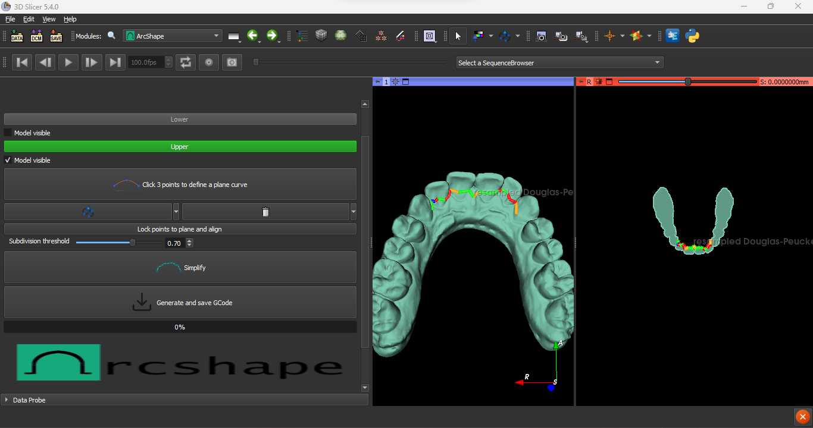

Plugins-3D slicer
Tools: Python, PyQt
 ArcShape Archshape is a 3D Slicer plugin written in Python which allows a user to design an orthodontic retainer wire based on a pair of teeth models. The user loads teeth models into the scene and can easily create a 3D plane to run through a model. This will create a line which tracks the target surface of the tooth where the wire will be placed. The program generates the intersection points between the plane and the mouth model. The user can adjust the points in a 3D view with real-time visual feedback; the distances between each consecutive point are colour-coded with length categories to account for constraints of wire-bending machine, and these colours are automatically updated when modified. The coordinates can be exported for use in a wire-bending machine. See a video of the software in action.
{kind=link}
 SkinModelMaker
SkinModelMaker is a 3D Slicer plugin written in Python which allows the user to design a 3D printable skin model with entry holes and labels for purposes of surgical planning. The clinician imports a CT scan and csv file containing a series of x-y coordinates representing target surgical endpoints. The software returns a model representing the outer skin surface punched through with holes corresponding to the user csv file. The csv data and GUI interface allows for adjustments of hole size, as well as ability to create adjustable size and position of embossed labels.
SkinModelMaker
SkinModelMaker is a 3D Slicer plugin written in Python which allows the user to design a 3D printable skin model with entry holes and labels for purposes of surgical planning. The clinician imports a CT scan and csv file containing a series of x-y coordinates representing target surgical endpoints. The software returns a model representing the outer skin surface punched through with holes corresponding to the user csv file. The csv data and GUI interface allows for adjustments of hole size, as well as ability to create adjustable size and position of embossed labels.
Scientific computing:
Tools: R programming
Statisical projects can view viewed here